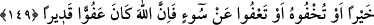

136- Ey îman edenler! Allah’a, Peygamberine, Peygamberine indirdiği Kitâb’a ve
daha önce indirdiği kitâba îman edin. Kim Allah’ı, meleklerini, kitaplarını,
peygamberlerini ve âhiret gününü inkâr ederse tam mânâsıyle sapıtmıştır.
137- Îman edip sonra inkâr edenleri, sonra yine îman edip tekrar inkâr edenleri,
sonra da inkârlarını arttıranları Allah ne bağışlayacak, ne de onları doğru yola
iletecektir.
138- Münâfıklara, kendileri için acı bir azap olduğunu müjdele!
139- Mü’minleri bırakıp da kâfirleri dost edinenler, onların yanında izzet (güç ve
şeref) mi arıyorlar! Bilsinler ki bütün izzet yalnızca Allah’a âittir.
140- O (Allah), Kitap’ta size şöyle indirmiştir ki: Allah’ın âyetlerinin inkâr
edildiğini yâhut onlarla alay edildiğini işittiğiniz zaman, onlar bundan başka bir söze
dalıncaya (konuya geçinceye) kadar kâfirlerle berâber oturmayın; yoksa siz de
onlar gibi olursunuz. Elbette Allah, bütün münâfıkları ve kâfirleri cehennemde
toplayacaktır.
141- Sizi gözetleyip duranlar, eğer size Allah’tan bir zafer nasip olursa, «Sizinle
berâber değil miydik?» derler. Kâfirlerin zaferden bir nasipleri olursa (bu sefer de
onlara), «Size üstünlük sağlayarak (öldürebileceğimiz halde öldürmeyip)
mü’minlerden korumadık mı?» derler. Artık Allah kıyamet gününde aranızda
hükmedecektir. Allah mü’minler aleyhine kâfirlere aslâ bir yol vermeyecektir.
142- Şüphesiz münâfıklar Allah’a oyun etmeye kalkışıyorlar; halbuki Allah
onların oyunlarını başlarına çevirmektedir. Onlar namaza kalktıkları zaman
üşenerek kalkarlar, insanlara gösteriş yaparlar, Allah’ı da pek az zikrederler.
143- Arada bocalayıp dururlar; ne onlara (bağlanıyorlar) ne bunlara. Allah’ın
şaşırttığı kimseye asla bir (çıkar) yol bulamazsın.
144- Ey îman edenler! Mü’minleri bırakıp da kâfirleri dost edinmeyin; (böyle
yaparak) Allah’a, aleyhinizde apaçık bir delil mi vermek istiyorsunuz?
145- Şüphe yok ki münafıklar cehennemin en alt katındadırlar. Artık onlara aslâ
bir yardımcı bulamazsın.
146- Ancak tevbe edip hallerini düzeltenler, Allah’a sımsıkı sarılıp dinlerini
(ibâdetlerini) yalnız O’nun için yapanlar başkadır. İşte bunlar mü’minlerle
berâberdirler ve Allah mü’minlere yakında büyük mükâfât verecektir.
147- Eğer siz şükreder ve îman ederseniz, Allah size neden azap etsin! Allah
şükre karşılık veren ve her şeyi bilendir.
148- Allah kötü sözün açıkça söylenmesini sevmez; ancak haksızlığa uğrayan